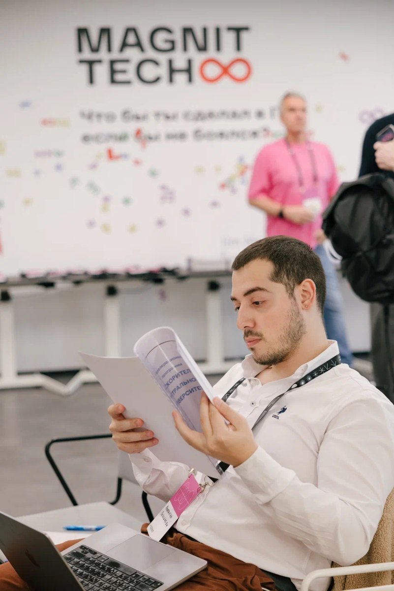

Помогаю принимать решения, от которых зависит стоимость бизнеса
Работаю с собственниками и руководителями: проверяю сделки, разрабатываю стратегию, помогаю увеличить выручку и маржинальность. Проект веду лично
За 30 минут разберём задачу и решим, с чего начать

Сам веду анализ, расчёты и обсуждение решения

Работаю напрямую с собственником или руководством: разбираю задачу, считаю варианты и готовлю материалы для решения
После решения помогаю команде запустить изменения и настроить контроль результата
Для отраслевых, юридических и налоговых вопросов подключаю профильных специалистов. Состав и бюджет согласуем заранее
С чем могу помочь
Откройте направление, чтобы посмотреть продукты и проекты
Услуга: сделки и инвестиции
Сделки и инвестиции Подготовить и провести сделку Планируете покупку или продажу актива, или привлечение инвестора
Продукты
- Оценка бизнеса
- Финансовая модель сделки
- Проверка бизнеса перед покупкой
- LBO-модель
- Структура и условия сделки
- Поиск компаний для покупки
- Подготовка бизнеса к продаже
- Материалы для инвестора
- Поддержка переговоров
Сделки и инвестиции: Проекты по этому направлению
-
Сторона покупателя / молочное производство / покупка 100% бизнеса / обезличено Покупка 100% молочного завода Вёл коммерческую проверку и LBO-модель покупки 100% бизнеса МасштабОколо $16 млн EV
- Задача
- Проверить экономику завода, определить цену покупки и собрать рабочую схему сделки
- Моя роль
- Лидировал финансовый и коммерческий блок вместе с ex-BCG Engagement Manager
- Что сделал
- Провёл коммерческую проверку, построил LBO-модельLBO – модель покупки бизнеса с привлечением заёмного финансирования и операционную модель, оценил денежные потоки и рассчитал производственные, закупочные и логистические синергии
- Результат
- Довёл финансовый и коммерческий блок до готовой структуры покупки 100% бизнеса стоимостью около $16 млн EV
-
Сторона покупателя / косметический бренд / контроль 50%+1 / 1–1,5 млрд ₽ / обезличено Оценка покупки потребительского бренда Коммерческая проверка, сценарная оценка и условия оплаты, привязанные к будущим результатам
- Задача
- Определить диапазон стоимости контрольного пакета и проверить прогноз продавца
- Моя роль
- Лидировал коммерческую проверку, финансовую модель и оценку со стороны покупателя
- Что сделал
- Очистил прибыль от разовых факторов, построил сценарную модель, оценил бизнес доходным и сравнительным методами и рассчитал покупку 50%+1 с частью цены, зависящей от будущих результатов
- Результат
- Сформировал диапазон стоимости 1–1,5 млрд ₽ и переговорную позицию покупателя
-
Сторона продавца / бренд одежды на Wildberries / около $2 млн EV / обезличено Продажа бренда одежды стратегическому инвестору Вёл сделку со стороны продавца от поиска инвестора до закрытия
- Задача
- Подготовить бренд к продаже, найти стратегического инвестора и организовать процесс сделки
- Моя роль
- Вёл весь процесс сделки со стороны продавца
- Что сделал
- Подготовил инвестиционные материалы и оценку, привлёк стратегического инвестора, согласовал условия с обеими сторонами и координировал NDA, term sheet, корпоративный договор и договор купли-продажи
- Результат
- Сделка стоимостью около $2 млн закрыта со стратегическим инвестором
-
Сторона продавца / гостиничная недвижимость / Сочи Оценка гостиничного актива в Сочи Расчёт стоимости и финансовые материалы для переговоров с покупателем
- Задача
- Определить стоимость актива и подготовить позицию продавца к переговорам
- Моя роль
- Вёл оценку и готовил финансовую позицию продавца
- Что сделал
- Рассчитал стоимость актива с учётом затрат на строительство и подготовил финансовые материалы для покупателя
- Результат
- Заказчик получил расчёт стоимости актива и материалы для переговоров
Услуга: стратегия роста
Стратегия роста Выбрать, куда расти дальше Выбираете, в какие рынки, продукты и проекты вкладывать деньги и время команды
Продукты
- Корпоративная стратегия
- Стратегия диверсификации
- Маркетинговые исследования
- Исследование новых рынков
- Сегментация клиентов
- Запуск новых направлений
- Финансовая модель развития
- Стратегические сессии
- План реализации
Стратегия роста: Проекты по этому направлению
-
Корпоративный проект / федеральный технологический оператор / CEO-1 Пятилетняя стратегия диверсификации Выбор новых направлений роста и единая финансовая модель компании ОдобреноПятилетняя стратегия ЦельУтроить EBITDA за пять лет
- Задача
- Определить, какие новые направления финансировать и как встроить их в пятилетний план
- Моя роль
- CEO-1 и руководитель офиса трансформации, отвечал за корпоративную стратегию и запуск новых направлений
- Что сделал
- Разработал финансовую модель, провёл четыре стратегические сессии, собрал корпоративную и функциональные стратегии и подготовил финансовые обоснования по трём новым направлениям. Для спутниковой связи провёл всероссийское B2B-исследование потребности лесной промышленности в связи на удалённых территориях
- Результат
- Пятилетняя стратегия одобрена, три новых направления вынесены на инвестиционный комитет. Цель – утроить EBITDAEBITDA – прибыль до процентов, налогов и износа активов; показатель помогает сравнивать результат бизнеса за пять лет
-
Клиентский проект / B2B SaaS / переход к продукту со встроенным ИИ / обезличено Пятилетняя стратегия роста B2B SaaS-компании Исследование рынка, сегментация клиентов и анализ 10 000 разговоров с клиентами ОдобреноАкционерами Расчёт+10–15 п.п. к конверсии
- Задача
- Обновить продукт и коммерческую модель с учётом развития ИИ и реальных причин отказа клиентов
- Моя роль
- Лидировал сравнение ИИ-продуктов, сегментацию рынка и речевую аналитику
- Что сделал
- Изучил более 10 международных кейсов, провёл более 5 экспертных интервью, сегментировал рынок и с нуля собрал прототип аналитики 10 000 звонков
- Результат
- Пятилетняя стратегия одобрена акционерами. Анализ выявил семь причин отказа и расчётный потенциал роста конверсии на 10–15 п.п.
-
Проект McKinsey & Company / государственный сектор / Ближний Восток Государственная стратегия устойчивого развития Стратегические приоритеты и инвестиционные направления на уровне страны
- Задача
- Определить приоритеты устойчивого развития и собрать основу для инвестиционных решений
- Моя роль
- В составе команды McKinsey CIS разрабатывал аналитический блок стратегии
- Что сделал
- Проанализировал приоритеты развития и подготовил материалы для целевой модели и инвестиционных решений
- Результат
- Аналитический блок вошёл в итоговую стратегию клиента
-
Проект McKinsey & Company / транспорт / Россия Аналитика для национальной транспортной стратегии Пропускная способность, обновление автопарка и транспортная доступность регионов
- Задача
- Подготовить аналитическую основу для решений по развитию транспортной системы
- Моя роль
- В составе команды McKinsey CIS вёл отдельные аналитические задачи транспортной стратегии
- Что сделал
- Проанализировал пропускную способность аэропортов, сценарии обновления автопарка и регуляторные развилки; подготовил концепцию пилота гибкого маршрута для Московского региона
- Результат
- Аналитика и концепция пилота вошли в материалы транспортной стратегии
-
Независимый проект / городская мобильность Финансовая и операционная модель запуска таксопарка Экономика поездки, мотивация водителей и требования к приложению
- Задача
- Проверить экономику проекта и определить операционную модель запуска
- Моя роль
- Вёл экономическую и операционную проработку вместе с предпринимателем
- Что сделал
- Рассчитал экономику поездки и таксопарка, разработал систему мотивации водителей и сформировал требования к приложению
- Результат
- Подготовил финансовую модель и комплект решений для запуска
Услуга: рост выручки
Рост выручки Увеличить выручку Хотите увеличить выручку за счёт продукта, продаж, цен, клиентской базы или объёма выпуска
Продукты
- Стратегия роста выручки
- Продуктовая стратегия
- Маркетинговые исследования
- Исследование клиентов и спроса
- Сегментация клиентской базы
- Балансировка клиентских портфелей
- Развитие каналов продаж
- Работа с ключевыми клиентами
- Прогноз продаж
- Рост производственного выпуска
Рост выручки: Проекты по этому направлению
-
Корпоративный проект / Яндекс Реклама / 2023–2024 Перестройка продаж в Яндекс Рекламе Перераспределил клиентские портфели, обучил команды и запустил новые форматы для ключевых рекламодателей Достигнуто+$2,8 млн к продажам Достигнуто130% плана против 115%
- Задача
- Увеличить продажи и внедрить работающие подходы во всей коммерческой команде
- Моя роль
- Менеджер проектов во внутреннем консалтинге Яндекса, лидировал отдельные блоки программы с охватом более 70 сотрудников
- Что сделал
- Провёл всероссийский аудит продаж. Вместе с шестью руководителями и 36 менеджерами перераспределил клиентов по отраслям и электронной торговле, сбалансировал портфели, разработал и вёл программу обучения. Запустил интенсивы для 60 ключевых клиентов, регулярный анализ рекламных кампаний и новый процесс прогнозирования
- Результат
- Увеличил продажи медийной рекламы на $2,8 млн в год. В программе для 60 ключевых клиентов выполнение плана достигло 130% против 115% в контрольной группе
-
Проект Yakov & Partners / металлургия / работа на площадке Рост выпуска на сталелитейном активе Разобрал причины потерь и настроил ежедневный контроль инициатив на площадке Достигнуто+10% к годовому темпу выпуска
- Задача
- Стабилизировать производство и увеличить выпуск в рамках доступного бюджета
- Моя роль
- Вёл аналитический блок Yakov & Partners на площадке и руководил двумя аналитиками
- Что сделал
- Построил дерево производственных факторов, запустил ежедневную отчётность и проектный офис, собрал портфель инициатив и провёл три рабочие сессии с руководителями производства
- Результат
- Годовой темп выпуска вырос на 100 тыс. тонн, или на 10%
-
Аналитический проект в рамках McKinsey Business Diving / Okko / La vie en Case Продуктовая стратегия развития видеостриминга Исследование рынка и 133 пользователей, 11 инициатив с рассчитанной экономикой Расчёт10,3 млрд ₽ выручки РасчётNPV 940 млн ₽
- Задача
- Увеличить аудиторию, выручку на пользователя и удержание Okko
- Моя роль
- В команде La vie en Case разрабатывал продуктовую стратегию видеостриминга
- Что сделал
- Изучил рынок и клиентский путь, участвовал в опросе 133 респондентов и разработке 11 инициатив по рекламе, поиску, рекомендациям, тарифам и коммуникациям
- Результат
- Команда рассчитала сценарий развития с выручкой 10,3 млрд ₽, NPVNPV – стоимость будущего финансового результата в сегодняшних деньгах 940 млн ₽, доходностью 27% и окупаемостью за 16 месяцев
-
Контрактный проект / медиахолдинг / Казахстан BI-система для управления продажами медиахолдинга Продажи, показатели и клиентские сегменты в единой управленческой панели
- Задача
- Объединить разрозненные данные и дать руководству единый обзор коммерческих результатов
- Моя роль
- Самостоятельно разработал BI-решение для управленческой команды
- Что сделал
- Собрал модель данных и отчётность Power BI по продажам, показателям и клиентским сегментам
- Результат
- Руководство получило единую панель для регулярного контроля продаж
Услуга: рост маржинальности и производительности
Маржинальность и производительность Повысить маржинальность Хотите снизить затраты, улучшить процессы и повысить производительность
Продукты
- Снижение затрат
- Закупки и каналы дистрибуции
- Оптимизация процессов
- Внутренний бенчмаркинг
- Модели расчёта численности
- Система мотивации
- Показатели и отчётность
- Проектный офис изменений
- Автоматизация и ИИ
Рост маржинальности и производительности: Проекты по этому направлению
-
Проект Yakov & Partners / потребительский рынок / маркетинговое исследование Новая модель канала дистрибуции для роста маржи Всероссийское исследование спроса и сравнение поставок из Китая и Польши РасчётДо +10 п.п. маржи
- Задача
- Понять спрос и выбрать канал поставок и дистрибуции с лучшей экономикой
- Моя роль
- Спроектировал исследование и отвечал за анализ данных
- Что сделал
- Разработал и провёл всероссийский опрос потребителей, изучил цепочки поставок из Китая и Польши и сравнил варианты операционной модели
- Результат
- Команда разработала модель канала дистрибуции с расчётным потенциалом роста маржи до 10 п.п.
-
Клиентские проекты / девелопмент, промышленность и финансы / команда до 3 человек Семь проектов по внутреннему бенчмаркингу и оптимизации численности Сравнение производительности и расчёт необходимой численности по функциям Расчёт10–30% потенциала оптимизации
- Задача
- Определить целевую численность функций и найти участки с разной производительностью
- Моя роль
- Лидировал семь проектов по внутреннему бенчмаркингу и оптимизации численности, руководил командой до трёх человек
- Что сделал
- Провёл анализ загрузки и замеры рабочего времени, сравнил выпуск на одного сотрудника и построил драйверные модели для продаж, заселения, производства, бухгалтерии, благоустройства и других функций
- Результат
- Клиенты получили целевую численность, калькуляторы и дорожные карты цифровизации; расчётный потенциал оптимизации составил 10–30% в зависимости от функции
-
Корпоративный проект / ГЛОНАСС / 500 сотрудников Внедрение системы мотивации для 500 сотрудников Квартальные показатели связали результат команды, личный вклад и размер премии
- Задача
- Связать премирование с целями компании и фактическим вкладом сотрудников
- Моя роль
- Как руководитель офиса трансформации вёл проект совместно с HR-директором
- Что сделал
- Разработал и внедрил квартальную систему показателей, правила расчёта премии и единый процесс оценки результатов
- Результат
- Система охватила 500 сотрудников и сократила годовые затраты примерно на $1 млн
-
Проект McKinsey & Company / ведущий банк Узбекистана / 22 направления Система показателей для 22 направлений банка Показатели 22 направлений и регулярный контроль выполнения плана
- Задача
- Связать цели банка с показателями направлений и единым управленческим циклом
- Моя роль
- В составе команды McKinsey CIS отвечал за систему показателей и модели контроля плана
- Что сделал
- Связал показатели 22 направлений с целями банка и разработал Excel-модели для контроля плана и факта
- Результат
- Руководство банка получило единую систему показателей и контроля исполнения
-
Корпоративное обучение / крупный оператор связи Программа обучения для 300+ корпоративных аналитиков Практический курс по бизнес-анализу для сотрудников оператора связи
- Задача
- Дать аналитикам единый подход и рабочие инструменты для проектных задач
- Моя роль
- Разработал и вёл программу обучения
- Что сделал
- Собрал структуру курса, подготовил материалы и практические задания и провёл серию занятий
- Результат
- Программу прошли более 300 сотрудников
Работаю вместе с руководителями и командами на месте



Начинаем с короткого сообщения
Созвон 30 минут
Разберём задачу, доступные данные и первый шаг. Разговор конфиденциальный
Предложение
Фиксирую объём, материалы, роли, срок и цену
Работа
Провожу анализ, собираю модель и обсуждаю промежуточные выводы
Передача и запуск
Передаю материалы, обсуждаю решение с командой и согласую план запуска
Что спрашивают до старта
С чего начать
Напишите в Telegram, чем занимается бизнес и какой вопрос нужно решить. На коротком созвоне уточним задачу и договоримся о первом шаге
Как проходит работа и что вы получите
Перед стартом согласуем вопрос, данные и итоговые материалы. В ходе проекта обсудим промежуточные выводы, а в конце вы получите готовую модель, расчёт или план действий
Кто работает над проектом и что потребуется от команды
Я лично веду анализ, строю модель и обсуждаю выводы с руководством. От команды клиента обычно нужны данные, несколько интервью и координатор. Профильных специалистов подключаю по согласованию
Сколько стоит работа
После 30-минутного созвона назову цену или диапазон. Стоимость зависит от объёма задачи, доступности данных и состава команды. В предложении закреплю цену, результат и график работы
Как защищаются данные
До старта подписываем соглашение о конфиденциальности и согласуем доступ к данным. На сайте публикую обезличенные материалы или материалы, согласованные с клиентом
Обсудим решение, которое вам нужно принять
Напишите в трёх строках: чем занимается бизнес, его масштаб и главный вопрос
Отвечу в течение рабочего дня и предложу время для короткого созвона